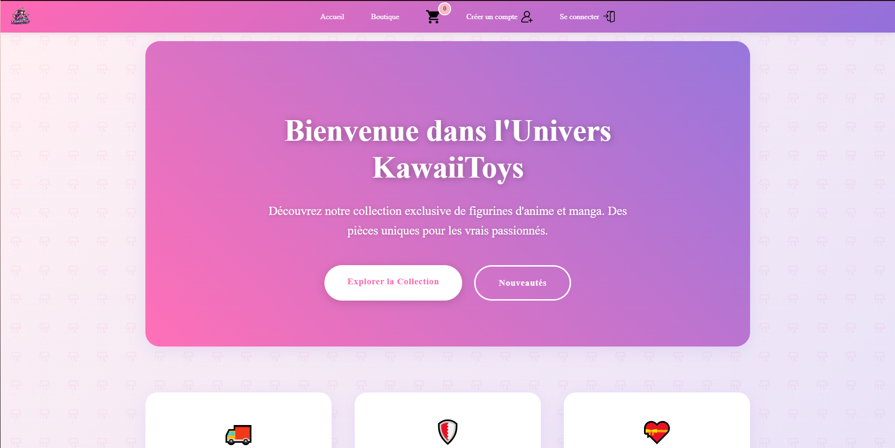
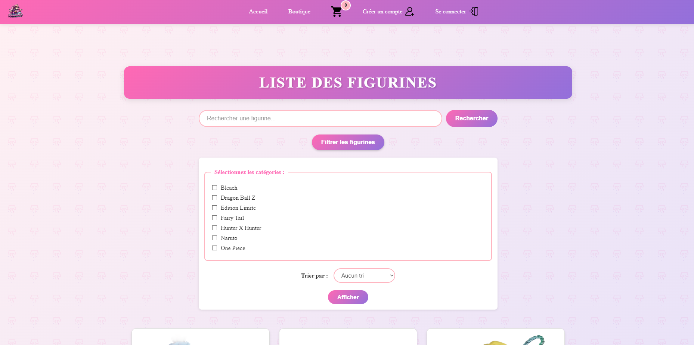
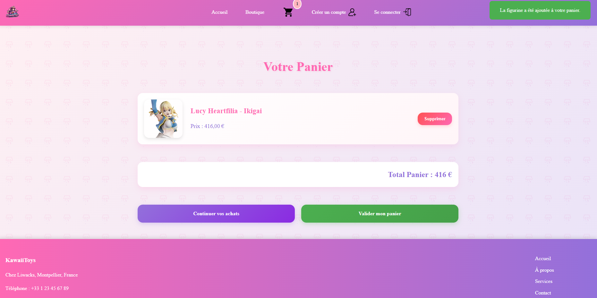
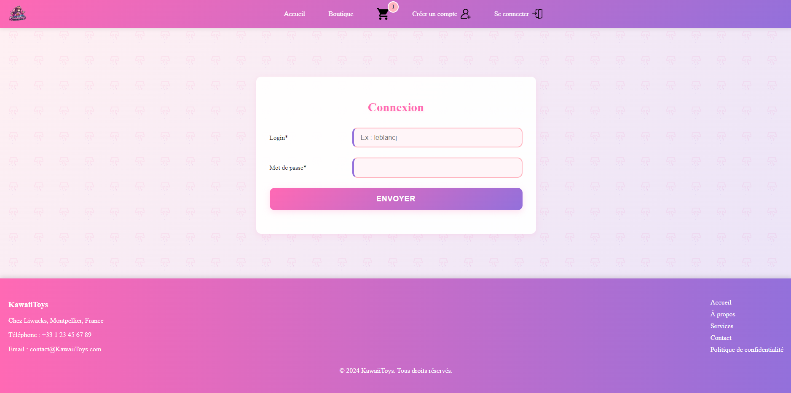

Description du projet
KawaiiToys est une plateforme de e-commerce dédiée à la vente de figurines inspirées des univers d’anime et de manga.
L'objectif était de créer une expérience utilisateur engageante et sécurisée tout en assurant une gestion efficace des produits et des commandes via une architecture MVC (Modèle-Vue-Contrôleur).
Contexte : Le marché des figurines issues de la culture japonaise est en plein essor. KawaiiToys s'adresse aux passionnés en leur offrant une plateforme spécialisée,
avec des fonctionnalités adaptées à leurs besoins : navigation rapide, sécurité des transactions, et design inspiré des codes visuels des anime et manga.
Objectifs :
- Développer une plateforme robuste et évolutive avec l'architecture MVC pour permettre une maintenance et des améliorations futures.
- Offrir un processus d'authentification utilisateur sécurisé, protégeant les comptes contre les attaques.
- Créer une interface intuitive et un design captivant pour attirer les fans d’anime et de manga.
Résultats obtenus : Le site dispose d’une navigation claire et rapide, d’un back-office permettant une gestion simplifiée des produits, et d’un système d’authentification sécurisé qui garantit la protection des données des utilisateurs.
Compétences acquises
- Conception UX/UI : Création d'une interface intuitive et captivante inspirée des codes visuels des anime et manga pour une navigation agréable et immersive.
- Développement front-end : Utilisation avancée de HTML5, CSS3 et JavaScript pour concevoir des pages dynamiques et responsives.
- Architecture MVC : Mise en œuvre d’une structure modulaire et évolutive, facilitant la maintenance et l’ajout de nouvelles fonctionnalités.
- Sécurisation des données : Implémentation d’un système d’authentification sécurisé avec hachage de mots de passe (bcrypt) et protection contre les attaques par dictionnaire.
- Optimisation des performances : Réduction des temps de chargement grâce à l’optimisation des images et la mise en cache des ressources statiques.
- Gestion de projet e-commerce : Développement d’un back-office pour la gestion des produits, commandes et utilisateurs, avec des filtres avancés pour faciliter les recherches.
- Collaboration d’équipe : Coordination efficace au sein d’un groupe pour résoudre rapidement les défis techniques et atteindre les objectifs du projet.
Défis techniques
1. Mise en place de l’architecture MVC :
Défi : Construire une structure permettant de séparer clairement la logique métier, les données, et la présentation, tout en assurant une communication fluide entre ces trois couches.
Solution :
- Modèle : Gestion de la base de données, comprenant les produits, utilisateurs, et commandes.
- Vue : Création de pages dynamiques avec des templates adaptés aux univers d’anime/manga.
- Contrôleur : Traitement des requêtes utilisateur, routage efficace, et gestion des interactions entre le modèle et la vue.
2. Authentification sécurisée :
Défi : Protéger les comptes utilisateur contre les attaques courantes comme les tentatives de connexion par dictionnaire (brute force).
Solution :
- Utilisation de mots de passe hachés avec une méthode robuste (bcrypt).
- Implémentation d’un délai de 3 secondes entre chaque tentative de connexion, limitant ainsi le nombre d’essais possibles à environ 20 par heure. Cette approche réduit significativement l’efficacité des attaques par dictionnaire tout en restant acceptable pour les utilisateurs légitimes.
3. Expérience utilisateur et performances :
Défi : Offrir une interface rapide et réactive, malgré des images produits volumineuses et des fonctionnalités dynamiques.
Solution :
- Optimisation des images pour réduire leur poids sans compromettre la qualité.
- Mise en œuvre d’une mise en cache des pages et ressources statiques.
- Conception d’un design responsive pour garantir une utilisation fluide sur tout type d’appareil.
Impact
1. Pour les utilisateurs :
- Une navigation intuitive et une expérience sécurisée, rassurant les fans lors de leurs achats.
- Un accès rapide à des figurines classées par anime/manga, avec des filtres pratiques pour les retrouver.
2. Pour l’entreprise :
- Une plateforme technique solide facilitant la gestion des stocks, commandes et utilisateurs.
- Une sécurité renforcée, augmentant la confiance des clients et diminuant les risques liés aux attaques.
- La capacité à évoluer avec de nouvelles fonctionnalités grâce à l’architecture modulaire du site.
3. Pour le marché des figurines :
- Une visibilité accrue pour des produits spécifiques à l’univers anime/manga.
- Une meilleure accessibilité pour les fans, grâce à une plateforme qui combine design captivant et performances.